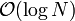
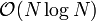

Prioritätswarteschlangen
Contents
Definitionen
Prioritätswarteschlangen verwendet man, wenn man in einem Container wiederholt das jeweils kleinste (Min Priority Queue) oder größte (Max Priority Queue) Element finden und gewöhnlich auch aus dem Container entfernen muss. Die typische Schnittstelle einer Prioritätswarteschlange pq enthält also typischerweise folgende effizient implementierte Operationen:
- Max Priority Queue
pq.insert(x) # Element x einfügen x = pq.largest() # das aktuell größte Element zurückgeben (aber es bleibt in der Queue) pq.removeLargest() # das aktuell größte Element entfernen
- Min Priority Queue
pq.insert(x) # Element x einfügen x = pq.smallest() # das aktuell kleinste Element zurückgeben (aber es bleibt in der Queue) pq.removeSmallest() # das aktuell kleinste Element entfernen
Die Funktionen insert und remove werden auch oft mit push bzw. pop bezeichnet (wie beim Stack). In vielen Implementationen gibt remove außerdem das aktuelle größte bzw. kleinste Element zurück. Neben Min und Max Queue gibt es auch die Min-Max Priority Queue (bidirektionale Prioritätswarteschlange), die das kleinste und das größte Element effizient finden und entfernen kann.
Prioritätswarteschlange als sequentielles Suchproblem
Am einfachsten kann eine Prioritätswarteschlange durch sequentielle Suche realisiert werden. In diesem Fall ist einfach ein (unsortiertes) dynamisches Array a gegeben, dessen Elemente mit Prioritäten ausgestattet sind. Dann gilt
pq.insert(x)<=> a.append(x) (amortisierte Komplexität)
Die Suche (in diesem Fall nach dem Element mit maximaler Priorität) wird durch sequenzielles Durchlaufen des Arrays realisiert
def largest(a):
N = len(a)
if N == 0:
raise RuntimeError("Access to empty priority queue.")
max = a[0]
k = 0
for n in range(1, N): # Dieser Code entspricht der inneren Schleife von Selection Sort
if a[n] > max: # Die Suche hat also die Komplexität O(N).
max = a[n]
k = n
return k # Den Index des kleinsten Elements zurückgeben
Ähnlich implementiert man das Entfernen des größten Elements: Man sucht zunächst dessen Index, schiebt dann alle nachfolgenden Elemente um einen Index nach vorn, und verkürzt schließlich das dynamische Array um ein Element.
Alternativ kann man auch die Komplexität von insert und largest vertauschen: insert kann die Queue sortiert aufbauen (indem jedes neue Element an seinem richtigen Platz eingefügt wird, was einen Aufwand von O(N) verursacht, da man im Mittel N/2 Elemente einen Platz nach hinten verschieben muss), so dass bei largest einfach in O(1) auf das letzte Element des Array zugegriffen wird. Auch das Entfernen des größten, also letzten Elements hat jetzt die amortisierte Komplexität O(1).
Bei kleinen Arrays ist die sequentielle Suche die schnellste Methode. Bei großen Arrays hingegen ist die Suche mit O(N) nicht effizient.
Prioritätssuche mit einem balancierten Suchbaum
Ein binärer Suchbaum eignet sich offensichtlich für die Prioritätssuche, weil das Einfügen und Entfernen eines Elements sowie die Suche nach dem kleinsten oder größten Element jeweils in

realisiert werden kann, falls der Baum balanciert ist. Man implementiert also insert z.B. wie beim Andersson-Baum. Die Suche nach dem größten Element wird durch eine einfache rekursive Funktion realisiert:def largest(node): # node ist die Wurzel des zu durchsuchenden Teilbaums
if node.right is not None: # rechts stehen immer die großen Elemente
return largest(node.right) # => Rekursion in den rechten Teilbaum
return node # wenn es nicht mehr nach rechts geht, dann haben wir den größten Knoten gefunden
Diese Funktion hat, wie auch insert und remove, die Komplexität . Alle Funktionen sind somit für große Datenstrukturen effizient. Allerdings stellt sich heraus, dass die Datenstruktur eines balancierten Suchbaums viel komplizierter ist, als für die Prioritätssuche notwendig wäre.
Die Heap-Datenstruktur
Die Datenstruktur des Heap ist speziell für die Prioritätssuche optimiert. Im Unterschied zum Suchbaum sucht man ja nicht nach einem beliebigen Element, sondern stets nach dem größten oder kleinsten. Dadurch kann die Datenstruktur signifikant vereinfacht werden.
Linkslastiger perfekt-balancierter Binärbaum
Ein linkslastiger Binärbaum ist ein Binärbaum, bei dem für jeden Knoten gilt, dass die Tiefe des linken Unterbaumes größer oder gleich der Tiefe des rechten Unterbaumes ist. Ein leerer Unterbaum hat dabei die Tiefe Null.
- d(node.left) ≥ d(node.right)
Wenn ein linkslastiger Binärbaum außerdem perfekt balanciert ist, gilt für alle Knoten sogar
- 1 ≥ d(node.left) - d(node.right) ≥ 0
d.h., die Höhe des linken Teilbaums kann maximal um Eins größer sein als die des rechten. Die folgende Graphik zeigt, dass man einen linkslastigen, perfekt balancierten Binärbaum effizient als Array implementieren kann, indem man die Knoten von oben nach unten und von rechts nach links durchnummeriert, und diese Nummern als Array-Indizes verwendet:

Dieser Baum entspricht dem Array
0, 1, 2, 3, 4, 5, 6, 7, 8, 9
In der Array-Repräsentation kann man den Vater und die Kinder eines gegebenen Knotens index durch einfache Umrechnung der Arrayindizes bestimmen:
parentIndex = ⌊(index - 1)/2⌋ # ⌊.⌋ heißt abrunden leftChildIndex = 2*index + 1 rightChildIndex = 2*index + 2
Diese Formeln gelten unter der Voraussetzung, dass die Indexzählung bei Null beginnt. Die Wurzel des Baumes hat also den Index 0. Ein neuer Knoten wird einfach am Ende des Arrays angehängt, und er ist ein linkes Kind, falls sein Index ungerade ist, andernfalls ein rechtes Kind. Offensichtlich bleiben die Eigenschaften der Linkslastigkeit und der perfekten Balance durch diese Einfügestrategie erhalten.
Heap-Bedingung
Ein Heap ist ein linkslastiger perfekt-balancierter Binärbaum, für den zusätzlich eine Heap-Bedingung gilt. Ein Baum erfüllt die Max-Heap-Bedingung, wenn für jedem Teilbaum gilt, dass die Wurzel eine höhere Prioriät hat als die Kinder. Entsprechend erfüllt der Baum die Min-Heap-Bedingung, wenn die Wurzel kleinere Priorität hat als die Kinder.
Im Kontext der array-basierten Repräsentation bedeutet dies, dass die Wurzel, also das Element heap[0] die größte (bzw. kleinste) Priorität hat. Die Funktion largest kann somit trivial implementiert werden:
def largest(heap):
return heap[0] # Komplexität
Einfügen und Löschen bei einem Heap
Beim Einfügen in einem Heap müssen wir sicherstellen, dass einerseits die Heap-Bedingung erfüllt wird, und andererseits der Baum linkslastig und perfekt balanciert bleibt. Wir hatten bereits gesehen, dass letzteres immer gilt, wenn wir das neue Element einfach am Ende des Arrays anhängen. Danach rufen wir eine Hilfsfunktion upheap auf, die die Heap-Bedingung wieder herstellt, falls sie durch das neu eingefügte Element verletzt wird:
def insert(heap, x):
heap.append(x) # Speichern des neuen Elements am Ende (in amortisiert) => Heap bleibt linkslastiger, perfekt balancierter Baum
upheap(heap, len(heap)-1) # repariere die Heap-Bedingung für Element len(heap)-1 (also das gerade eingefügte Element)
Die Funktion upheap prüft, dass der Vaterknoten höhere (Max-Heap) bzw. niedrigere (Min-Heap) Priorität hat als der neue Knoten. Ist dies nicht der Fall, werden die beiden Knoten getauscht, und die Überprüfung wird rekursiv auf den Vaterknoten angewendet. Während der Reparaturen wandert man also im Baum aufwärts Richtung Wurzel, daher der Name der Funktion:
def upheap(heap, k):
"""das k-te Element ist evtl. im Heap zu tief einsortiert und erfüllt die Heap-Bedingung nicht"""
v = heap[k] # k-tes Element zwischenspeichern
while True: # Endlosschleife wird unten durch break verlassen
if k == 0: # wir sind an der Wurzel
break # => Heap-Bedingung ist auf jeden Fall erfüllt
parent = (k - 1)//2 # Berechnung der Vaterindex (Abrunden wegen Floor-Division)
if heap[parent] > v: # wenn die Max-Heap-Bedingung erfüllt ist
break # => Abbruch der Rekursion
heap[k] = heap[parent] # sonst: parent-Element muss eine Ebene nach unten verschoben werden
k = parent # und parent wird der neue Index k
heap[k] = v # heap[k] ist jetzt die richtige Stelle für das neue Element
Die Anzahl der Schleifendurchläufe entspricht maximal der Tiefe des Baumes. Die Komplexität von insert ist somit , weil der Baum balanciert ist.
Bei removeLargest müssen wir entsprechend das erste Element heap[0] aus dem Array entfernen. Allerdings kann aus einem dynamischen Array nur das letzte Element effizient (in amortisiert O(1)) entfernt werden. Wir verwenden deshalb einen Trick: Wir überschreiben das Element heap[0] mit dem letzten Element heap[-1], und löschen dann das letzte Element (das ja jetzt zweimal im Heap ist). Da das letzte Element normalerweise nicht das Element mit der größten Priorität sein wird, muss mit der Hilfsfunktion downheap noch die Heap-Bedingung repariert werden.
def removeLargest(heap):
heap[0] = heap[-1] # das letzte Element auf die erste Stelle bringen (das bisherige erste Element ist damit gelöscht)
del heap[-1] # das letzte Element löschen
downheap(heap) # repariere die Heap-Bedingung für Element 0
Die Funktion downheap geht jetzt im Baum abwärts in Richtung der Blätter und stellt sicher, dass die Kinder jedes Knotens kleinere Prioritäten haben als der Knoten selbst:
def downheap(heap, last = None):
"""Das 0-te Element ist evtl. im Heap zu hoch einsortiert und erfüllt die Heap-Bedingung nicht.
Die Variable last gibt den Index des letzten gültigen Elements an (wird unten für Heapsort benötigt)."""
if last is None: last = len(heap) - 1
k = 0
v = heap[k] # 0-tes Element zwischenspeichern
while True: # Endlosschleife wird unten durch break verlassen
child = 2*k + 1 # linkes Kind
if child > last: # linkes Kind existiert nicht (k ist Blattknoten)
break # => Rekursion abbrechen
if child + 1 <= last and heap[child] < heap[child + 1] # rechtes Kind existiert und ist größer
child = child + 1 # => vergleiche mit rechtem Kind (sonst mit linkem)
if v >= heap[child]: # wenn die Max-Heap-Bedingung erfüllt ist
break # => Abbruch der Rekursion
heap[k] = heap[child] # sonst: child-Element muss eine Ebene nach oben verschoben werden
k = child # und child wird der neue Index k
heap[k] = v # heap[k] ist jetzt die richtige Stelle für das Element v
Auch in dieser Funktion erreicht die Anzahl der Schleifendurchläufe maximal die Tiefe des Baumes. removeLargest hat somit eine Komplexität von .
Beispiel am Wort "SORTING"
Wir fügen die Buchstaben [S, O, R, T, I, N, G] in dieser Reihenfolge in eine Max Priority Queue ein. Bei den ersten drei Buchstaben passiert nichts interessantes, da S der größte von ihnen ist und somit die Heap-Bedingung nicht verletzt wird. Wir bekommen also den Heap:
S | \ | \ O R
(um das Ganze anschaulicher zu machen, verwenden wir die Baumdarstellung des Heap anstelle der Array-Darstellung). Fügt man jetzt T am Ende des Heap ein, wird es zum linken Kind von O, und die Heap-Bedingung ist verletzt. Wir benötigen zwei Iterationen von upheap, um die Heap-Bedingung wieder herzustellen:
S S T | \ | \ | \ | \ | \ | \ O R => T R => S R | | | T O O
Beim Einfügen von I, N und G am Ende des Heaps wird die Heap-Bedingung nicht verletzt:
T | \ | \ S R |\ |\ O I N G
Entfernen wir jetzt das größte Element T, wird zuerst das letzte Element (also G) an die Position 0 gebracht. Die Heap-Bedingung muss jetzt durch zwei Iterationen von downHeap repariert werden:
G S S | \ | \ | \ | \ | \ | \ S R => G R => O R |\ | |\ | |\ | O I N O I N G I N
Beim Entfernen von S kommt N an die Position 0. Hier genügt eine Iteration, um die Heap-Bedingung wieder herzustellen:
N R | \ | \ | \ | \ O R => O N |\ |\ G I G I
Der nächste Aufruf von removeLargest bringt das I an Position 0, und es wird ein Schritt zur Reparatur benötigt:
I O | \ | \ | \ | \ O N => I N | | G G
Weitere Heapvarianten
- Min-Max-Priority Queue ("Deap", Double Ended Heap): Implementiert largest, smallest, reamoveLargest, removeSmallest jeweils in .
- Binomialer Heap: Erlaubt das effiziente Zusammenführen zweier Prioritätslisten. Fügt eine effiziente Operation "mergeHeaps" hinzu, die aus zwei gegebenen Heaps mit N1 bzw. N2 Elementen in einen neuen Heap mit N=N1+N2 Elementen erzeugt. Der Name der Datenstruktur leitet sich von den Binomialkoeffizienten her, die in den Beweisen der Eigenschaften benutzt werden.
- Fibonacci-Heap: Einfügen und Merge erfolgen in konstanter Zeit , das Entfernen in amortisiert logarithmischer Zeit . Allerdings ist die Datenstruktur sehr kompliziert, und die in der O-Notation verborgenen Konstanten sind wesentlich größer als bei einem normalen Heap, so dass kein tatsächlicher Geschwindigkeitsgewinn beobachtet wird. Deshalb werden Fibonacci-Heaps in der Praxis kaum verwendet. Der Name kommt von den Fibonacci-Zahlen, die in den Beweisen benutzt werden.
Heap-Sort
Da ein Heap als Array repräsentiert ist, kann man die Heap-Funktionen benutzen, um einen effizienten Sortieralgorithmus zu definieren. Die Idee des Algorithmus ist, erst alle Elemente des unsortierten Arrays in den Heap einzufügen, und danach die Elemente in sortierter Reihenfolge wieder zu entfernen. Der Hauptunterschied zum normalen Heap besteht dabei darin, dass wir das Array nicht nach jedem Einfügen und Entfernen um ein Element verlängern bzw. kürzen: Stattdessen markieren wir nur, welcher Teil des Arrays zur Zeit der gültige Heap ist, und benutzen den Rest des Arrays, um die übrigen Arrayelemente (die zur Zeit nicht im Heap sind) aufzubewahren.
def heapSort(array):
N = len(array)
for k in range(1, N): # Einfügephase: alle Element in den Heap einsortieren
upheap(array, k) # d.h. Heap-Bedingung für Array bis Element k erfüllen
for k in range(N-1, 0, -1): # Entfernenphase: alle Elements sortiert wieder aus dem Heap entnehmen:
array[0], array[k] = array[k], array[0] # d.h. aktuell größtes Element mit Ende des Heaps vertauschen
downheap(array, k-1) # und Heap-Bedingung für den Rest des Heaps reparieren
Sowohl die Einfüge- wie auch die Entfernenphase -- und damit die gesamte Funktion heapSort -- haben die Komplexität

, weil jeweils N Operationen auf einem Heap der mittleren Größe N/2 ausgeführt werden. Es gibt sogar eine noch etwas effizientere Variante von Heap-Sort, die das Einfügen in linearer Zeit bewältigt. Dies ändert aber nichts an der Gesamtkomplexität, da die Komplexität des Entfernens gleich bleibt.Der große Vorteil von Heap-Sort gegenüber Merge Sort besteht darin, dass alle Operationen in place, also ohne Verwendung zusätzlichen Speichers ausgeführt werden (genau genommen muss man dazu allerdings die Funktion xrange statt range beutzen, siehe Kapitel 2.1 der Python Dokumentation). Heap Sort gleicht damit Quick Sort, hat aber gegenüber diesem den Vorteil, dass die Komplexität im schlechtesten Fall immer noch bleibt (bei Quick Sort:  ). Allerdings zeigt sich, dass Quick Sort im typischen Fall etwa doppelt so schnell ist wie Heap Sort, und dass der ungünstige Fall von Quick Sort in der Praxis nicht vorkommt (falls man die Pivot-Elemente nicht zu naiv wählt). Daher wird Heap Sort in der Praxis selten verwendet.
). Allerdings zeigt sich, dass Quick Sort im typischen Fall etwa doppelt so schnell ist wie Heap Sort, und dass der ungünstige Fall von Quick Sort in der Praxis nicht vorkommt (falls man die Pivot-Elemente nicht zu naiv wählt). Daher wird Heap Sort in der Praxis selten verwendet.
Am Beispiel des Arrays [S, O, R, T, I, N, G] können wir die Reihenfolge der Operationen gut verdeutlichen. Im Unterschied zu oben verwenden wir jetzt die Array-Repräsentation:
SORTING # Anfangszustand
Einfügephase:
SORTING # upheap(array, 1) und upheap(array, 2) ändern nichts TSROING # upheap(array, 3) TSROING # upheap(array, 4) bis upheap(array, 6) ändern ebenfalls nichts
Entfernenphase:
GSROINT # vertauschen von array[0] und array[6] SORGINT # downheap(array, 5) NORGIST # vertauschen von array[0] und array[5] RONGIST # downheap(array, 4) IONGRST # vertauschen von array[0] und array[4] OINGRST # downheap(array, 3) GINORST # vertauschen von array[0] und array[3] NIGORST # downheap(array, 2) GINORST # vertauschen von array[0] und array[2] IGNORST # downheap(array, 1) GINORST # vertauschen von array[0] und array[1] GINORST # downheap(array, 0) ändert nichts mehr
Prioritätssuche mit dem Bucket-Prinzip
Das Bucket-Prinzip, das wir beim Sortieren in Linearzeit kennen gelernt haben, leistet auch gute Dienste, um die Suche in Prioritätswarteschlangen zu beschleunigen. Um es anzuwenden, benötigen wir wieder eine Funktion bucketMap, die die Prioritäten auf ganze Zahlen im Bereich 0...(m-1) abbildet, wenn wir m Buckets verwenden wollen. Die Reduktion auf m verschiedene Prioritäten ist in der Praxis häufig möglich: In vielen Situationen gibt es gar kein sinnvolles Kriterium, um Prioritäten sehr fein aufzuschlüsseln. Denken Sie z.B. an Prüfungsnoten, die nur in Schritten von 1/3 Noten angegeben werden. Eine feinere Aufteilung würde zu ziemlich willkürlichen Ergebnissen in den Nachkommastellen führen, und potentielle Arbeitgeber könnten daraus kaum nützliche Hinweise für die Eignung eines Kandidaten entnehmen. Ähnlich liegt der Fall, wenn die Prioritäten aus Messwerten berechnet werden, die eine (in der Praxis nicht untypische) Messgenauigkeit von 1% haben. Dann reicht eine Quantisierung auf 256 Stufen vollkommen aus, denn die Nachkommastellen würden ohnehin nur noch Rauschen enthalten (256 Stufen sind relativ beliebt, weil man damit gerade die Möglichkeiten eines Bytes ausschöpft).
Sind die Prioritäten auf m Stellen quantisiert, aber es gibt n > m verschiedene Objekte, müssen einige Objekte zwangsläufig gleiche Priorität haben. In diesem Fall werden die Objekte nach dem First in-First out-Prinzip priorisiert. Die Datenstruktur BucketPriorityQueue verwendet deshalb intern ein Array von Queues. Eine geeignete Queue-Datenstruktur findet sich im Python-Modul collections: Die Klasse collections.deque unterstützt sowohl die Funktionalität einer Queue (first in-first out: append und popleft) als auch die eines Stacks (last in-first out: append und pop). Der folgende Code realisiert eine MinPriorityQueue, wobei wir zur Vereinfachung annehmen, dass die Priotitäten direkt als Bucket-Indizes verwendet werden können:
import collections
class BucketPriorityQueue:
def __init__(self, m):
self.data = [collections.deque() for k in xrange(m)] # Array mit m leeren Queues
self.size = 0 # noch keine Daten vorhanden
self.minBucket = m # den niedrigsten zur Zeit vorhandenen Bucket-Index merken
def __len__(self):
return self.size # Python-Standardfunktion für die Anzahl der Elemente
def push(self, priority, value): # neues Element einfügen
if priority < 0 or priority >= len(self.data): # Vorbedingung prüfen
raise ValueError('BucketPriorityQueue.push(): Priority is out of range.')
self.data[priority].append(value) # Element an die passende Queue anhängen
self.size += 1 # Anzahl aktualisieren
if priority < self.minBucket:
self.minBucket = priority # niedrigsten zur Zeit vorhandenen Bucket-Index aktualisieren
def top(self): # Element mit höchster Priorität abfragen
if self.size == 0: # Vorbedingung prüfen
raise IndexError('BucketPriorityQueue.top(): Queue is empty.')
return self.minBucket, self.data[self.minBucket][0] # Priorität und zugehörigen Wert zurückgeben
def pop(self):
if self.size == 0: # Vorbedingung prüfen
raise IndexError('BucketPriorityQueue.top(): Queue is empty.')
priority = self.minBucket # Priorität und
value = self.data[priority].popleft() # ... Wert des Top-Elements speichern
self.size -= 1 # Anzahl aktualisieren
if self.size == 0: # den niedrigsten zur Zeit vorhandenen Bucket-Index aktualisieren
self.minBucket = m
else:
while len(self.data[self.minBucket]) == 0:
self.minBucket += 1
return priority, data # Priorität und zugehörigen Wert zurückgeben
Alle Befehle in push, top und pop haben konstante Komplexität, bis auf das Aktualisieren des niedrigsten Bucket-Index in pop, das im ungünstigen Fall die Komplexität O(m) haben kann, z.B. wenn immer abwechselnd Objekte mit der Priorität 0 und der Priorität (m-1) eingefügt werden. Dieser hypothetische Fall kommt aber in der Praxis kaum vor. Er ist auch ausgeschlossen, wenn man zuerst sämtliche Elemente in die Queue einfügt, und danach in sortierter Reihenfolge wieder entnimmt (denn dann muss minBucket nur einmal hochgezählt werden). In praktischen Anwendungen führt die Verwendung der BucketPriorityQueue häufig zu deutlichen Verbesserungen gegenüber einem Heap.